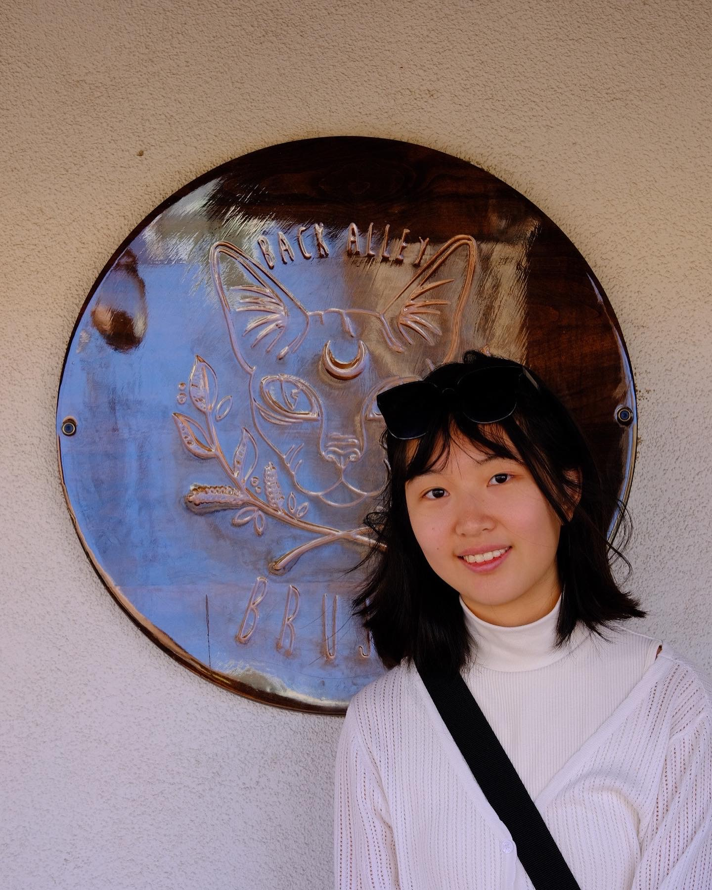
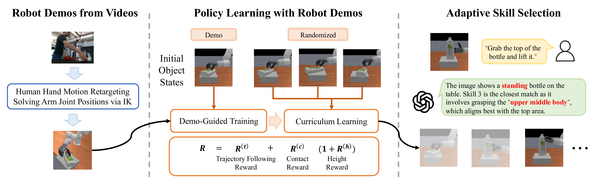
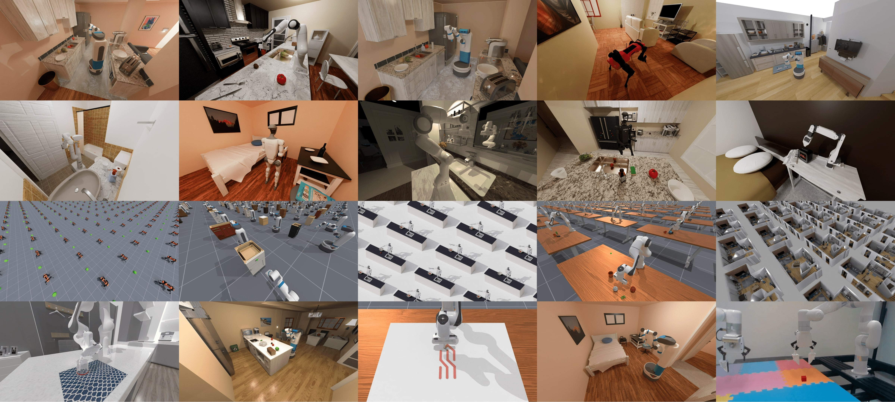
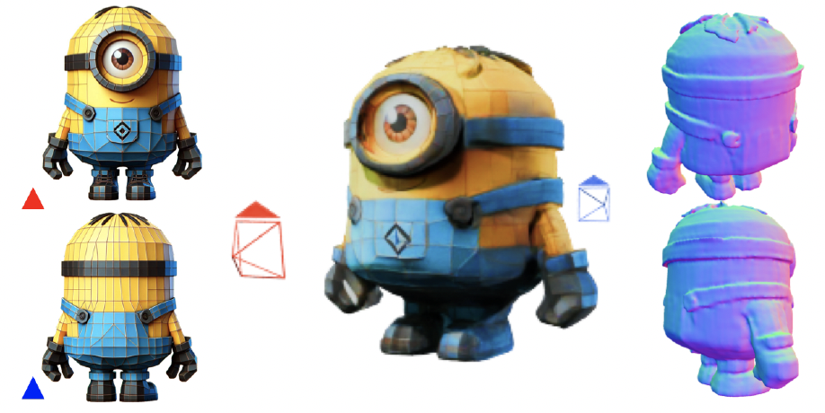
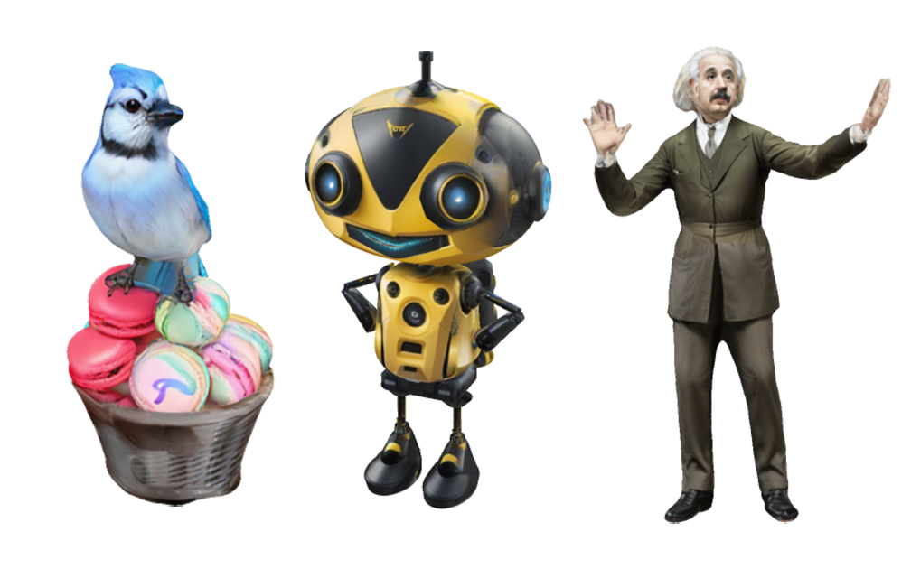
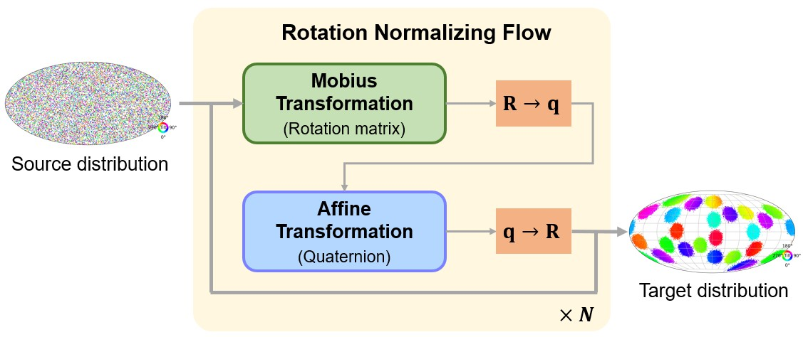

|
Yulin Liu | 刘雨霖 I’m a 2nd year Ph.D student at Computer Science & Engineering Department, UC San Diego, where I am honored to be advised by Prof. Hao Su. I received my Bachelor degree at Department of Physics, Peking University, where I am fortunate to be advised Prof. He Wang. Email / CV / Github / Google Scholar |  |
News
|
ResearchI'm building dexterous robots that can learn like we do. 🤖 I'm recently interested in using human demonstrations, captured via teleoperation and hand tracking, to teach robots complex manipulation skills. My long-term goal is to make them an essential part in our daily lives. I'm open to collaborations, feel free to contact me! Publications are listed by recency. Key papers are in the Selected tab. |
|  |
Learning Adaptive Dexterous Grasping from Single Demonstrations
*, *, *, , , Website / arXiv / video
IROS 2025
International Conference on Intelligent Robots and Systems
Oral Presentation
TL;DR:
AdaDexGrasp learns grasping skills from single demonstrations and uses a vision-language model to adaptively select the correct one based on user instructions.
|
|  |
ManiSkill3: GPU Parallelized Robotics Simulation and Rendering for Generalizable Embodied AI
, , , , , , , , , , , , , , , , , , , , , , Website / arXiv / code
TL;DR:
ManiSkill3 is an open-source, GPU-parallelized robotics simulator focusing on generalizable manipulation with contact-rich physics. |
|  |
SpaRP: Fast 3D Object Reconstruction and Pose Estimation from Sparse Views
, , , , , , Website / arXiv
TL;DR:
Given sparse unposed views, we leverage rich priors embedded in multiview diffusion models to predict their poses and reconstruct the 3D shape.
|
|  |
3D-Adapter: Geometry-Consistent Multi-View Diffusion for High-Quality 3D Generation
, , , , , , , , , Website / arXiv / code
arXiv 2024
TL;DR:
3D-Adapter enables high-quality 3D generation using a 3D feedback module attached to a base image diffusion model for enhanced geometry consistency.
|
|  |
Delving into Discrete Normalizing Flows on SO(3) Manifold for Probabilistic Rotation Modeling
, , , , , Website / arXiv / code / video
CVPR 2023
Computer Vision and Pattern Recognition Conference
TL;DR:
We propose a discrete normalizing flow on SO(3) manifold, through which one can not only effectively express arbitrary distributions on SO(3),
but also conditionally build the target distribution given input observations.
|
Selected Honors
|
Services
|
Experience |

|
University of California San Diego, USA 2023.09 - PresentPh.D. in Computer Science & Engineering DepartmentResearch Advisor: Prof. Hao Su |
Hillbot Inc., USA 2024.06 - 2024.09Research InternMentor: Prof. Hao Su, Dr. Zhiao Huang |
Embodied Perception and InteraCtion (EPIC) Lab, China 2022.06 - 2023.06Research InternResearch Advisor: Prof. He Wang |
Peking University, China 2019.09 - 2023.06B.S. in PhysicsGPA: 3.85/4.0 |
|
Thank you for visiting 😊 Feel free to contact me if you have any questions.
|